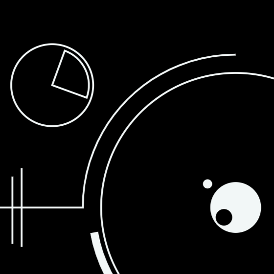
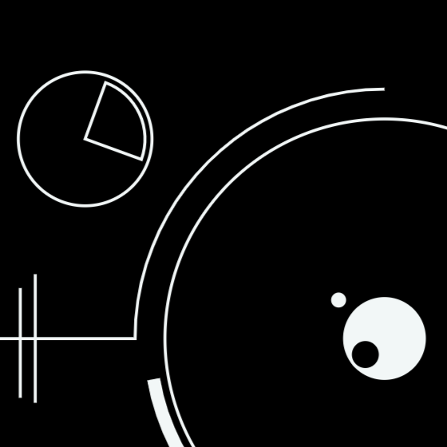

« Qu'est-ce donc que le temps ? Si personne ne me le demande, je le sais ; mais si on me le demande et que
je veuille l'expliquer, je ne le sais plus » disait Saint Augustin. Le
temps a-t-il une origine? Une fin? Est-il cyclique ou linéaire. Voilà, des débats qui ne
vieillissent
jamais. Déjà, dans la Grèce Antique, Aristote liait le temps avec le mouvement. Une pensée
philosophique qui, bien plus tard, prendra une ampleur scientifique.
Faites bouger le curseur pour accélérer la machine.


 
